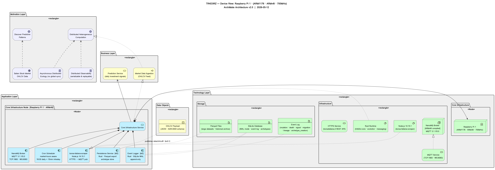

TR4D3RZ — Interactive ArchiMate Device View · Click any element for details
| Active Structure | Behavior | Passive Structure | Motivation | |
|---|---|---|---|---|
| Motivation Layer |
Distributed Heterogeneous
Computation Discover Predictive
Patterns Asynchronous Distributed
Ecology (no global sync) Distributed Observability
(serializable & replayable) Italian Stock Market
OHLCV Data |
|||
| Business Layer |
Market Data Ingestion
(OHLCV Feed) Prediction Service
(daily investment signals) |
OHLCV Payload
(JSON · ADR-0004 schema) |
||
| Application Layer |
NanoMQ Broker
MQTT 3.1.1/5.0 TCP:1883 · WS:8083 borsa-italiana-scraper
Node.js 14.15.1 HTTPS → MQTT pub Event Logger [M2]
Rust · SQLite WAL append-only Persistence Service [M2]
Rust · Parquet export archetype store Cron Scheduler
market-hours aware 18:30 daily + 15min intraday |
Core Infrastructure Service
|
||
| Technology Layer |
Raspberry Pi 1
(ARM1176 · ARMv6l · 700MHz) NanoMQ Broker
[ARMv6l compiled] MQTT 3.1.1/5.0 Rust Runtime
(tr4d3rz-core · evolution · messaging) Node.js 14.15.1
(borsa-italiana-scraper) |
MQTT Service
(TCP:1883 · WS:8083) HTTPS Service
(borsaitaliana.it REST API) |
SQLite Database
(WAL mode · event log · archetypes) Parquet Files
(large datasets · historical archive) Event Log
(mutation · death · signal · migration · lineage · archetype_creation) |
